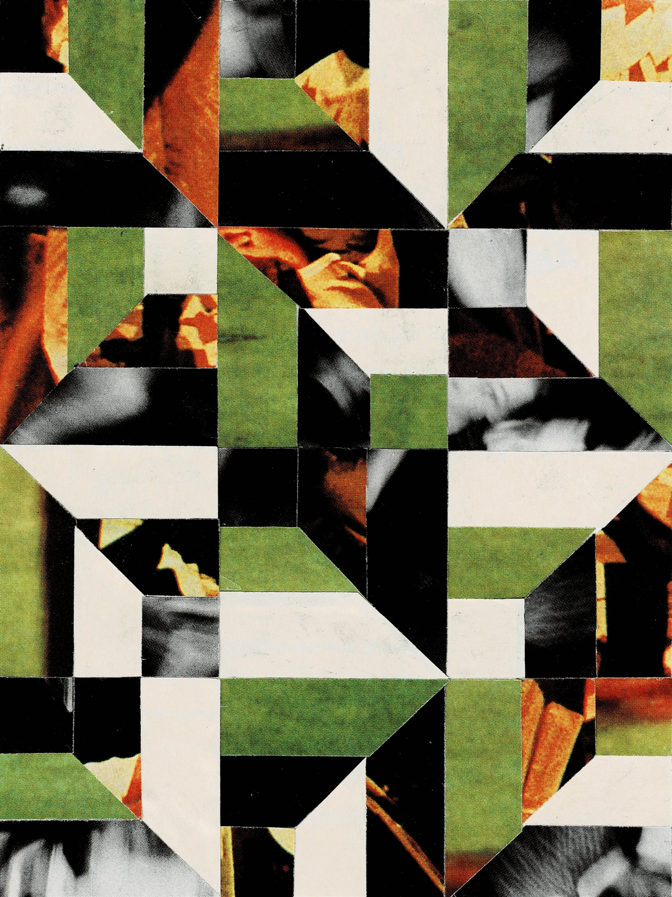

Abstract Collage #2
5 in x 7 in
This collage was the second of a series using paper collected from Life Magazine’s 1996 issue “50 Most Influential Boomers,” picked up from a local antique store.
Return to artwork
5 in x 7 in
This collage was the second of a series using paper collected from Life Magazine’s 1996 issue “50 Most Influential Boomers,” picked up from a local antique store.
Return to artwork